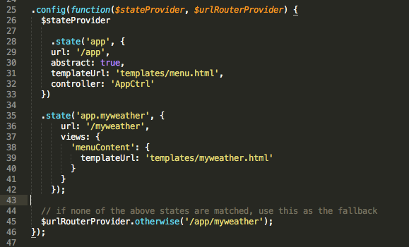

In this app, your routes will be found in the www/js/app.js file. Routes tell your application which html file to load when a given URL is requested, either manually when manipulating the URL, or by navigating within the app itself. The playlists example has several routes; we will only need a few, so we are going to be changing some of the existing routes and removing some that are unnecessary.
Lines 1 through 23 of the pre-generated Ionic code can remain as they are. On line 25, the routes are helped by the passed in $urlRouterProvider. We're going to be leaving the first .state as it is. Let's spend a little time breaking down what each part of the state is doing.
.state('app', {
This defines a state called 'app'. This is the top level of the app routing - all other routes will be appended to 'app'.
url: '/app',
This is the URL that this state governs. When the app url + /app is accessed, Ionic will render the html file defined in the next few lines, and allow the view to have access to the controller also listed below.
abstract: true,
This line allows for children of this route to inherit from it. It also tells Ionic that this route won't ever be loaded directly.
templateUrl: 'templates/menu.html',
This tells Ionic what view to load when this route is accessed. Because this is an abstract state, it is appropriate to pass the menu file to it, as every page should inherit access to the menu.
controller: 'AppCtrl'
The final line of this state tells the route which controller should govern the business logic of the view, and allows the view named (in this case, menu.html) to have access to the controller called AppCtrl.
The rest of the child app states should be deleted or modified until your app.js file looks as such:

As the comment on line 60 notes, you need to provide a fallback route. This will give the app a default location to go to if the user tries to access an invalid route.
We're done editing the routes, so now it's time to clean up our controller.